OSINT-расследование в одном окне.
Десктоп-приложение для работы с открытыми источниками: пивоты по идентификаторам, поиск никнейма по сотням сайтов, доска связей и заметки. Данные дела хранятся на вашем компьютере.
Одно дело. Шесть разделов.
Объекты, связи и заметки расследования живут в одном деле. Каждый раздел открывается с клавиатуры, а палитра Ctrl K находит команду, объект, заметку или настройку.
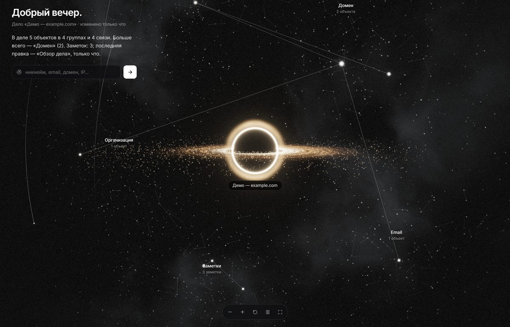
Обзор · встроенное демо-дело «example.com»: объекты дела становятся звёздами на карте
Вставьте значение. Umbra поймёт, что это.
Никнейм, email, домен, IP, телефон, криптокошелёк: тип определяется автоматически, и для каждого есть свой набор пивотов. Ссылки открываются в вашем браузере, вместе с вашими сессиями и настройками OPSEC.
- «Открыть все» запускает весь набор пивотов разом
- Значение одной кнопкой попадает на доску связей
- Для никнейма в этом же разделе работает проверка по сайтам
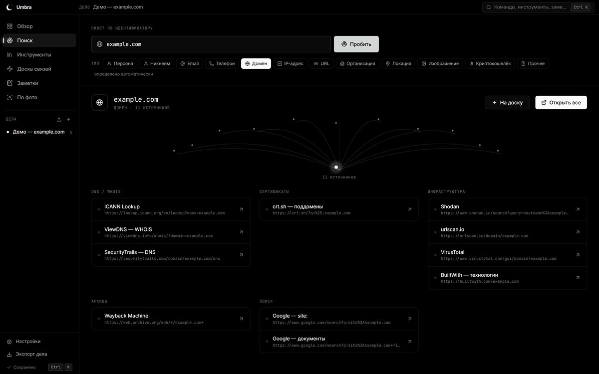
Поиск · example.com → Домен, 11 источников
Сотни сайтов. Около минуты.
Встроенный движок на основе Sherlock Project проверяет, где зарегистрирован никнейм. Ниже — реальный прогон для ника blue.
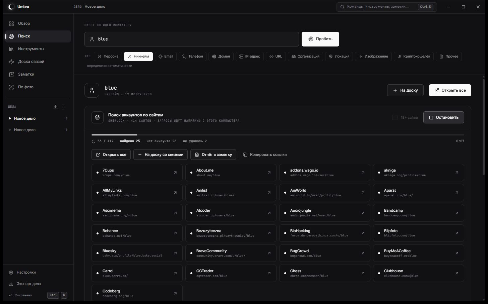
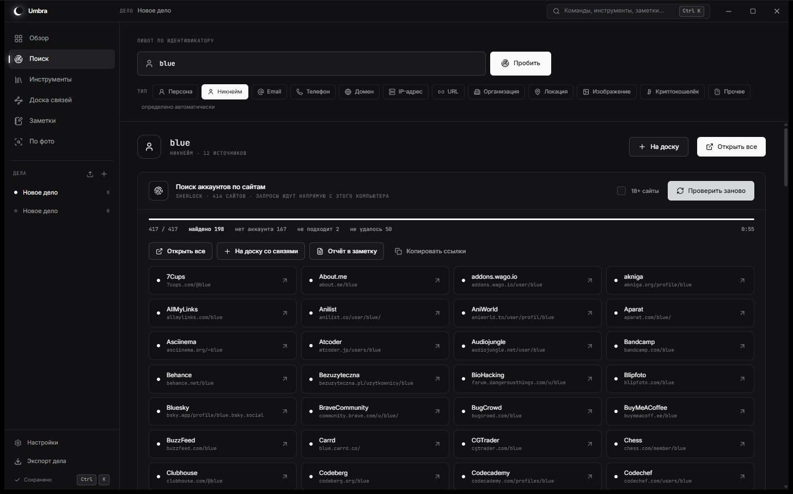
Правила Sherlock
База из 481 сайта встроена в приложение и обновляется с GitHub одной кнопкой.
Честные статусы
Если ответила защита от ботов или сайт ограничил запросы, результат помечается как «не удалось проверить».
Потоком
Результаты появляются по мере ответа сайтов, проверку можно остановить в любой момент.
Дальше в работу
Найденное отправляется на доску со связями или сохраняется отчётом в заметку.
Связи, которые видно.
Граф сущностей в духе Maltego. Перетаскивайте объекты, подписывайте связи и запускайте трансформы прямо из узла: инспектор показывает пивоты для его типа. Тот же граф можно развернуть в 3D.
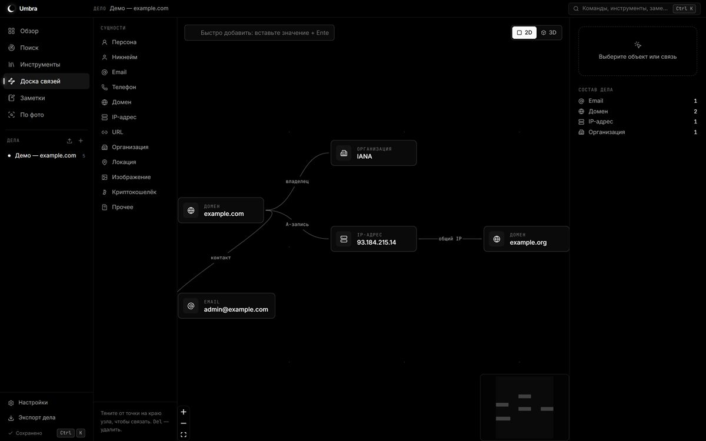
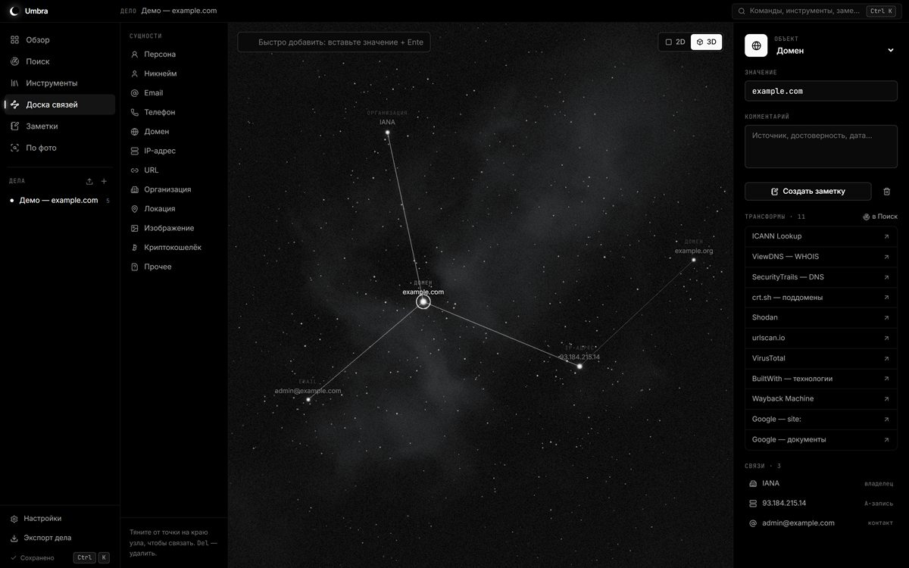
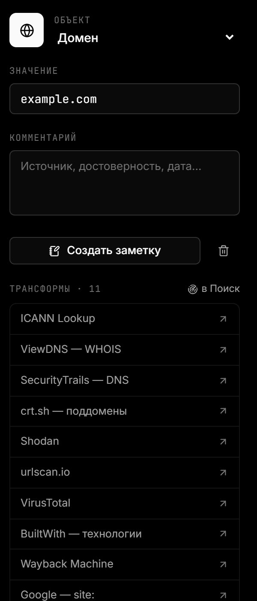
Доска · демо-дело, режим 2DCtrl Shift D
Перетаскивание
Объекты раскладываются свободно, связь тянется от точки на краю узла.
Подписи связей
«владелец», «A-запись», «контакт»: у каждой связи свой смысл.
Трансформы
Пивоты для типа объекта запускаются из инспектора, без перехода в Поиск.
Заметка к объекту
Из инспектора создаётся заметка, связанная с узлом доски.
Каталог, собранный для расследований.
Ресурсы разложены по категориям по мотивам OSINT Framework: поиск по названию и адресу, фильтры по типу ресурса, избранное всегда под рукой.
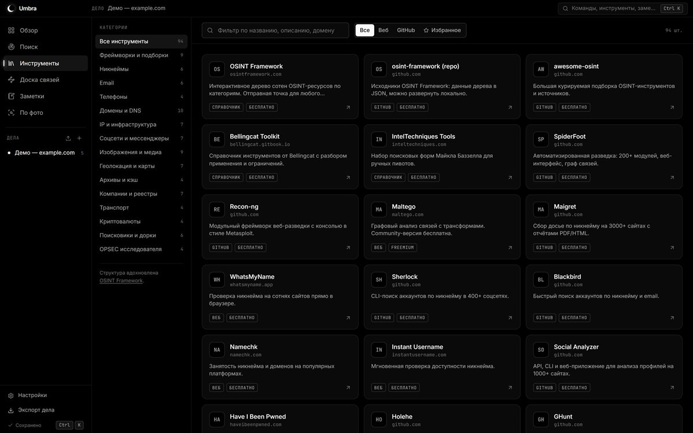
ресурса в 15 категориях
В каждой карточке название, адрес и короткое описание. Метки показывают вид ресурса (веб, GitHub, справочник) и условия доступа (бесплатно, freemium, платно). Ссылки открываются в браузере.
Знание, связанное ссылками.
Markdown в духе Obsidian: пишите [[WHOIS example.com]], и заметки свяжутся. Обратные ссылки видны рядом, при переименовании ссылки обновляются сами, а граф показывает всю сеть заметок.
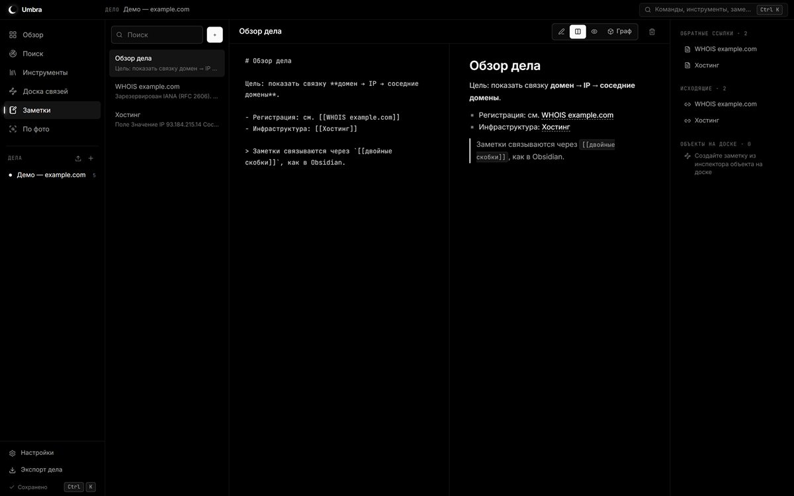
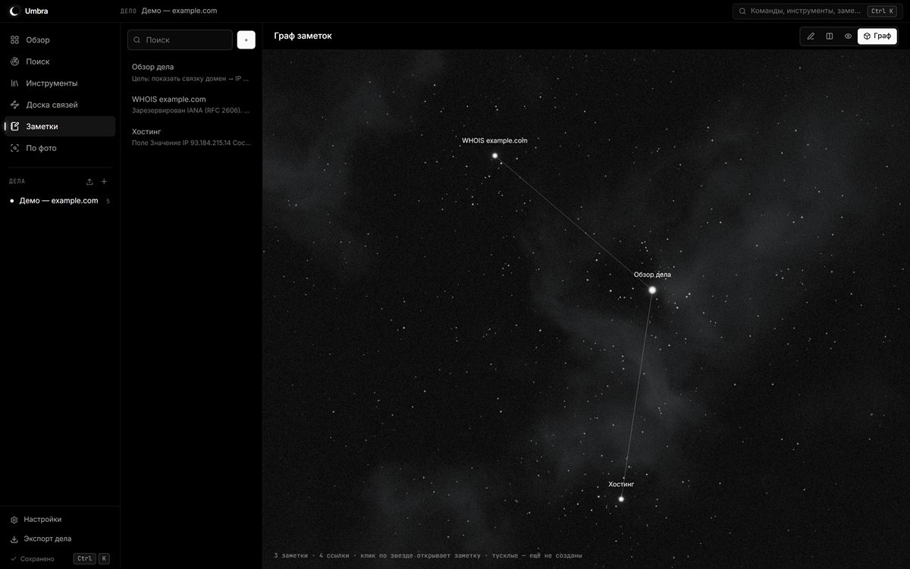
Заметки · редактор со сплит-просмотром и граф заметок демо-дела Ctrl E — редактор, сплит, просмотр
Где ещё встречается этот снимок.
Перетащите фото в окно или вставьте его из буфера. Дальше два пути: поиск прямо в приложении или в привычных поисковиках.
Google Cloud Vision
Официальный способ искать по изображению в веб-индексе Google. Результаты остаются в истории поисков, и любой поиск можно повторить.
- Страницы с этим изображениемполные и частичные совпадения
- Похожие изображенияvisually similar
- Сущности и лучшая догадкаweb entities
- Ваш ключ APIв диспетчере учётных данных Windows
Четыре поисковика
Umbra копирует фото в буфер обмена и открывает поисковик, где остаётся нажать Ctrl V. Само приложение никуда фото не загружает.
- Google Lenslens.google.com
- Яндекс Картинкиyandex.ru/images
- Bing Visual Searchbing.com/visualsearch
- TinEyetineye.com
Дело остаётся у вас.
Аккаунтов и сервера Umbra нет. Всё дело хранится в одной SQLite-базе на диске. В сеть уходят только запросы, которые вы запускаете сами: пивоты в браузере, проверка никнейма и Cloud Vision по вашему ключу.
- →ИнтерфейсИзменения в памяти приложения
- →СинхронизацияЗапись через ~0,4 с, не реже раза в 2 с, и при закрытии окна
- →umbra.dbSQLite, WAL, synchronous=FULL, одна транзакция на пакет
- →backups/Последние 15 копий
Проверка при запуске
База проверяется командой quick_check. Повреждённый файл не удаляется, а сохраняется под другим именем, и данные восстанавливаются из последней исправной копии.
Копии перед риском
Резервная копия создаётся раз в сутки при запуске, а также перед обновлением схемы, очисткой, импортом и восстановлением.
Прерванная запись не страшна
Каждый пакет изменений — одна транзакция: если запись прервалась, она откатывается целиком.
Только вперёд
Схема базы версионируется. Базу от более новой версии приложение не открывает и не меняет.
Ключи вне базы
Ключ Cloud Vision хранится в диспетчере учётных данных Windows и не попадает ни в базу, ни в экспорт.
Помнит, где вы остановились
Раздел, дело, заметка, выбранный объект, камера доски, фильтры, размер и положение окна.
Под капотом.
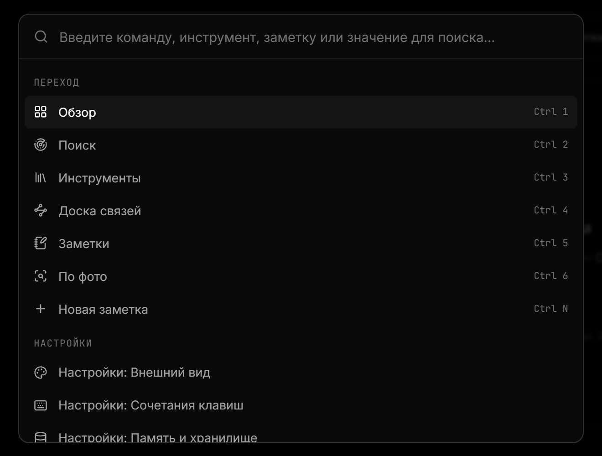
Палитра команд · Ctrl K
- Платформа
- Windows · установщик .msi / .exe
- Версия
- 0.1.0
- Ядро
- Tauri 2, Rust
- Интерфейс
- React 19, TypeScript, Tailwind CSS 4
- Хранилище
- SQLite, встроенная в приложение · %APPDATA%\com.umbra.osint\umbra.db
- Пивоты
- 12 типов данных, 76 шаблонов запросов
- Каталог
- 94 ресурса, 15 категорий
- Поиск по никнейму
- Порт Sherlock на Rust · 481 сайт в базе · 24 параллельных запроса · таймаут 30 с
- Поиск по фото
- Google Cloud Vision (Web Detection) · Google Lens, Яндекс, Bing, TinEye
- Управление
- Палитра Ctrl K, разделы Ctrl 1–6, все сочетания переназначаются
- Оформление
- Тёмная и светлая темы Ctrl Shift L
- Данные
- Экспорт и импорт настроек и памяти в JSON, отдельные дела — тоже
Войдите в тень.
Скоро здесь появится лаунчер Umbra для Windows: он установит приложение и будет его обновлять.
Windows · установщик .msi / .exe